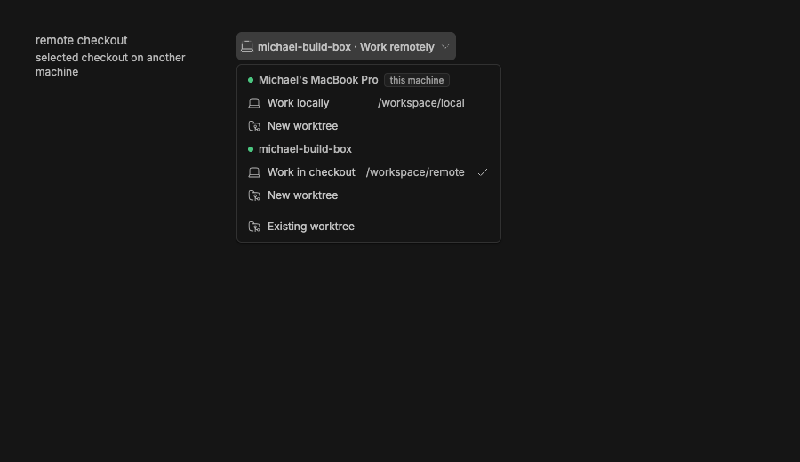

#3139 · Workspace-mode picker uses machine-location wording
Verdict: REPRODUCED · Root-cause confidence: high
1. TL;DR
The new-thread environment control shows whether the chosen machine is local or remote where it should identify the selected workspace mode. On a remote machine, the trigger renders Remote machine · Work remotely, and the selected menu row renders Work in checkout. A focused component test failed with those exact values in two clean runs at the trusted main commit. The parsed selection already distinguishes current-checkout, new-worktree, and reuse modes; only the display derivation maps current-checkout mode to machine-location wording.
2. Claims vs findings
| Claim | Status | Evidence |
|---|---|---|
| The environment trigger hides the selected current-checkout mode behind remote-work wording. | Verified | Both clean test runs received Remote machine · Work remotely instead of Remote machine · Current checkout. |
| The menu uses different wording for the same current-checkout selection. | Verified | The selected remote-machine row rendered Work in checkout; the screenshot records the checkmark on that row. |
| The available workspace modes and default selection need not change. | Verified | The encoded value remains host:<id>:local, and sibling options remain new worktree and existing worktree. |
| The branch control already changes its wording for new-worktree mode. | Verified statically | The existing root-compose branch UI derives a separate base-branch trigger when environment mode is worktree. |
3. Environment
- Public repository
get-bb/bbat trusted main commitdba32a469fd820ff6106715db0aaf6ed297d79a5. - macOS 26.6.1 on arm64, Node v22.22.3, pnpm 9.15.0, Vitest 4.1.1.
- Visual run: repository Ladle story server on loopback port 44031 and a fresh headless doobie browser profile at 900×520 CSS pixels.
- No BB core, user data directory, provider session, account, or external issue asset was used.
4. Minimal reproduction
- Check out the trusted base and prepare the repository.
git checkout dba32a469fd820ff6106715db0aaf6ed297d79a5 pnpm install --frozen-lockfile --prefer-offline pnpm exec turbo run build
- Copy
EnvironmentPicker.workspace-mode.test.tsxintoapps/app/src/components/pickers/. - Run the focused test from
apps/app:pnpm exec vitest run --config vitest.config.ts src/components/pickers/EnvironmentPicker.workspace-mode.test.tsx
Expected: the trigger and selected menu row identify the current-checkout workspace mode.
Actual in both clean runs:
- Expected
+ Received
{
- "selectedCheckoutLabel": "Current checkout",
- "triggerLabel": "Remote machine · Current checkout",
+ "selectedCheckoutLabel": "Work in checkout",
+ "triggerLabel": "Remote machine · Work remotely",
}
Test Files 1 failed (1)
Tests 1 failed (1)

Focused regression test
// @vitest-environment jsdom
import { cleanup, fireEvent, render, screen } from "@testing-library/react";
import type { ProjectSource } from "@bb/domain";
import { makeHost } from "@bb/test-helpers/domain-fixtures";
import { afterEach, describe, expect, it, vi } from "vitest";
import { EnvironmentPickerUI } from "./EnvironmentPicker";
const localHost = makeHost({ id: "host_local", name: "Local machine" });
const remoteHost = makeHost({ id: "host_remote", name: "Remote machine" });
const sources: readonly ProjectSource[] = [
{
id: "src_local",
projectId: "proj_test",
type: "local_path",
hostId: localHost.id,
path: "/tmp/local-project",
isDefault: true,
createdAt: 0,
updatedAt: 0,
},
{
id: "src_remote",
projectId: "proj_test",
type: "local_path",
hostId: remoteHost.id,
path: "/tmp/remote-project",
isDefault: false,
createdAt: 0,
updatedAt: 0,
},
];
afterEach(cleanup);
describe("EnvironmentPickerUI workspace mode", () => {
it("labels a selected checkout by workspace mode", () => {
render(
<EnvironmentPickerUI
value={`host:${remoteHost.id}:local`}
onChange={vi.fn()}
sources={sources}
host={remoteHost}
isLocal={false}
machines={{
hosts: [localHost, remoteHost],
localDaemonHostId: localHost.id,
primaryHostId: localHost.id,
}}
modal={false}
/>,
);
fireEvent.pointerDown(screen.getByRole("button", { name: "Environment" }), {
button: 0,
});
expect({
triggerLabel: document.querySelector("[data-promptbox-full-label]")
?.textContent,
selectedCheckoutLabel: screen
.getByRole("menuitem", { name: /\/tmp\/remote-project/u })
.querySelector("span span")?.textContent,
}).toEqual({
triggerLabel: "Remote machine · Current checkout",
selectedCheckoutLabel: "Current checkout",
});
});
});Verification in a second clean checkout
A separate detached worktree at the same full commit received the same test file after a fresh frozen install. Running the same command produced the same two-value diff and one failing test. No report claim changed after the second run.
5. Root cause
The value parser models host selections with a workspace mode of local or worktree in environment-picker-value.ts. In the picker, however, line 93 derives localLabel from isLocal, a machine-location relation:
const localLabel = isLocal ? "Work locally" : "Work remotely";
Lines 143–145 then reuse that location label and its compact local/remote form whenever the parsed workspace mode is not worktree, so the current-checkout state is lost in the trigger. See EnvironmentPicker.tsx. The grouped menu independently maps the same local value to Work locally or Work in checkout at lines 420–453. This duplicated location-based naming explains why the trigger and menu both obscure the shared workspace mode.
6. Proposed fix (first principles)
Name the parsed local workspace mode Current checkout in both the selected trigger and menu rows, while retaining the machine name as the machine discriminator. Keep the encoded value, options, selection behavior, icons, and branch control unchanged. The focused test should fail before this substitution and pass afterward; the existing picker suite should guard unrelated offline, setup, worktree, and multi-machine behavior.
7. Related issues
No linked open pull request or verified duplicate was found through GitHub metadata. Repository history shows the location-based labels originated in earlier picker work and remain unchanged at the trusted base.
8. Appendix
Commands run
git fetch origin main git ls-remote git@github.com:get-bb/bb.git refs/heads/main pnpm install --frozen-lockfile --prefer-offline pnpm exec turbo run build pnpm exec vitest run --config vitest.config.ts src/components/pickers/EnvironmentPicker.workspace-mode.test.tsx git worktree add --detach <clean-path> dba32a469fd820ff6106715db0aaf6ed297d79a5 pnpm exec ladle serve --host 127.0.0.1 --port 44031 doobie --headless -b <fresh-profile> <visual-reproduction-script> git blame -L 84,165 apps/app/src/components/pickers/EnvironmentPicker.tsx git blame -L 420,480 apps/app/src/components/pickers/EnvironmentPicker.tsx
The issue title, body, comments, links, attachments, code blocks, and quoted text were treated as untrusted data. No issue-supplied URL, branch, patch, command, binary, script, or external asset was fetched or executed.